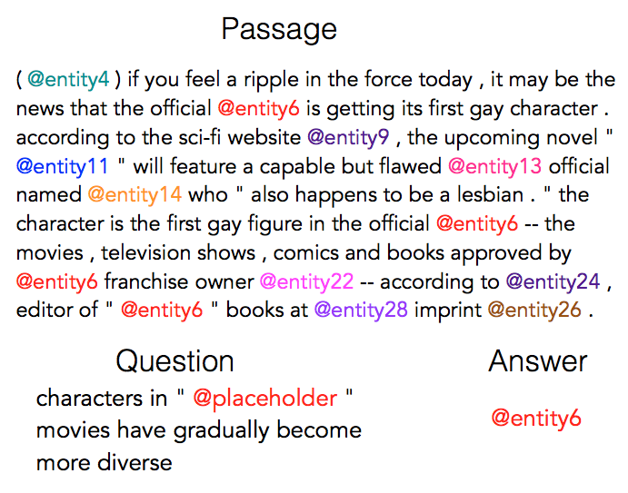

Collections of Datasets
Updated:
Maluuba datasets
FigureQA
This dataset link introduces a new visual reasoning task for research, specific to graphical plots and figures. The task comes with an additional twist: all of the questions are relational, requiring the comparison of several or all elements of the underlying plot.
NewsQA
This dataset link is to help the research community build algorithms that are capable of answering questions requiring human-level comprehension and reasoning skills.
Frames
This dataset link is precisely meant to encourage research towards conversational agents which can support decision-making in complex settings, in this case - booking a vacation including flights and a hotel. More than just searching a database.
NLPCC tasks
Every year NLPCC releases some shared tasks. see link.
Chinese Word Analogy
This project provided analogical reasoning dataset to evaluate word vectors of Chinese.
Machine Translation
UN Parallel Corpus
The United Nations Parallel Corpus v1.0 link is composed of official records and other parliamentary documents of the United Nations that are in the public domain. These documents are mostly available in the six official languages of the United Nations. The current version of the corpus contains content that was produced and manually translated between 1990 and 2014, including sentence-level alignments. (more data in WMT17)
Inferring
SNLI
The SNLI corpus (version 1.0) link is a collection of 570k human-written English sentence pairs manually labeled for balanced classification with the labels entailment, contradiction, and neutral.
Related paper: A large annotated corpus for learning natural language inference. 2015
MultiNLI (dev)
The Multi-Genre Natural Language Inference (MultiNLI) corpus is a crowd-sourced collection of 433k sentence pairs annotated with textual entailment information. The corpus is modeled on the SNLI corpus, but differs in that covers a range of genres of spoken and written text, and supports a distinctive cross-genre generalization evaluation.
Related paper: A Broad-Coverage Challenge Corpus for Sentence Understanding through Inference. (dev)
Machine Comprehension
SQuAD
Related paper: SQuAD: 100,000+ questions for machine comprehension of text. 2016
CNN/Daily Mail
The dataset is created by pairing CNN and Daily Mail news articles with their summarized bullet points. There are 380k and 879k training examples for CNN and Daily Mail respectively.

Related paper: Teaching machines to read and comprehend. 2015
CBT
Children Book Test takes any consecutive 21 sentences from a children’s book – the first 20 sentences are used as the passage, and the goal is to infer a missing word in the 21st sentence.
Related paper: The Goldilocks Principle: Reading children’s books with explicit memory representations. 2016
WikiMovies
This dataset contains 96k question-answer pairs in the domain of movies. Originally created from the OMDb and MovieLens databases.
Related paper: Key-value memory networks for directly reading documents. 2016
Wikireading
Related paper: A novel large-scale language understanding task over wikipedia. 2016